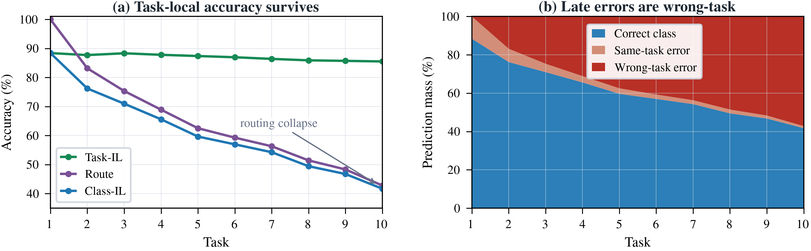
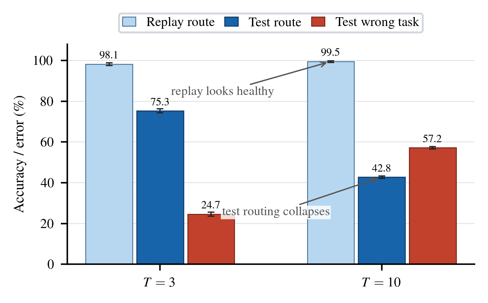
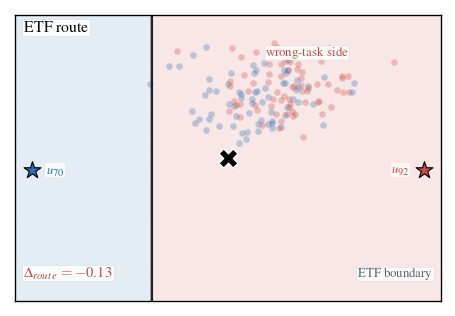
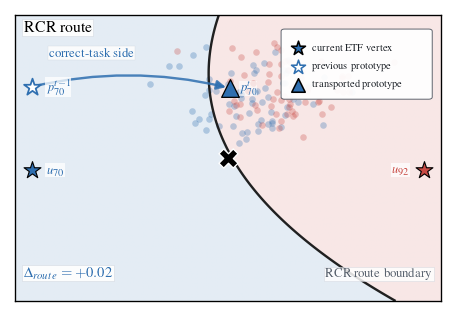

Takeaways
The paper studies a narrow but important failure mode of neural-collapse continual classifiers: the representation can remain discriminative inside each task, while the global classifier routes examples to the wrong task block.
- Routing drift is measurable. Route accuracy separates cross-task score comparability from within-task class discrimination.
- Replay can hide the failure. Stored samples often stay well routed even when held-out samples from the same old classes collapse toward newer task blocks.
- RCR is a classifier-level correction. It keeps the trained backbone and ETF frame fixed, then composes global ETF evidence with local radial reliability around transported class representatives.
Abstract
Progressive neural-collapse classifiers can learn strong task-local decision boundaries while failing the global Class-IL decision. We identify this failure as routing drift: a held-out sample can remain separable within its true task block, yet receive its largest global score from another block.
We formalize route accuracy directly from the global class argmax, separating within-task discrimination from cross-task score comparability. This decomposition motivates Reliability-Calibrated Routing (RCR), a classifier-level correction that keeps the trained backbone and global ETF frame fixed while adding class-local reliability evidence around transported, NC-shrunk class representatives.
Across three datasets and two fixed replay-buffer budgets, RCR gives the best Class-IL FAA on five of six settings and reduces Class-IL forgetting on all six, with the strongest gains in harder routing regimes.
Routing Drift
Problem. Class-IL accuracy is a product of two decisions, but standard reporting usually exposes only the final product. This can make a model look like it forgot the old classes, even when most of the remaining error is a cross-task routing error.
Class-IL correctness requires two events: the predicted class must fall in the correct task block, and the within-block class decision must be correct. In progressive ETF classifiers, the second event can remain strong while the first collapses.
Route accuracy measures whether the global argmax lands in the correct task block. It is read from the classifier output; it is not a learned task oracle.

Reliability-Calibrated Routing
RCR is deliberately scoped as a classifier-level correction for progressive ETF models. It does not retrain the representation, fit a task router, or replace the global neural-collapse frame.
The method asks for two kinds of evidence before a class wins: global alignment with the ETF vertex, and local plausibility under the transported class measure. This keeps the neural-collapse classifier as the global reference while correcting the local reliability mismatch induced by feature drift.
Use the original ETF score as global neural-collapse evidence.
Move class representatives into the current feature frame before scoring old classes.
Add radial plausibility with competitive radii and NC-consistent shrinkage.
RCR is evaluated on the same end-of-task backbone and ETF classifier.
Old class centers are moved into the current feature frame before nearest-prototype evidence is computed.
Competitive radii encode how much radial evidence each class should contribute.
The ETF and radial scores are standardized per sample and mixed with a fixed rule.
When progressive neural collapse is exact, transported representatives coincide with ETF vertices and RCR reduces to the normalized nearest-ETF classifier. Decisions change when class centers drift away from the ideal ETF geometry or class reliabilities become heterogeneous.


Results
The paired comparison below evaluates $s_{\mathrm{ETF}}$ and $s_{\mathrm{RCR}}$ on the same frozen checkpoints over seeds 0, 1, and 2. RCR improves Class-IL and route accuracy together, while Task-IL remains stable.
The largest gains occur on CIFAR-100 and TinyImageNet, where the Task-IL / route gap is widest. CIFAR-10 with buffer 500 is already close to the neural-collapse ideal, so the gain is smaller; this is consistent with RCR being inactive when ETF geometry is already reliable.
| Dataset / buffer 200 | Score | Class FAA | Class FF | Task FAA | Route |
|---|---|---|---|---|---|
| CIFAR-10 | ETF | 66.14 | 31.47 | 96.74 | 66.58 |
| CIFAR-10 | RCR | 70.36 (+4.22) | 22.85 (-8.62) | 96.67 | 70.82 (+4.24) |
| CIFAR-100 | ETF | 41.71 | 38.55 | 85.53 | 42.81 |
| CIFAR-100 | RCR | 49.74 (+8.03) | 16.27 (-22.28) | 87.28 | 51.43 (+8.62) |
| TinyImageNet | ETF | 25.77 | 43.45 | 68.30 | 28.58 |
| TinyImageNet | RCR | 31.42 (+5.65) | 23.84 (-19.61) | 69.59 | 34.76 (+6.18) |
| Dataset / buffer 500 | Score | Class FAA | Class FF | Task FAA | Route |
|---|---|---|---|---|---|
| CIFAR-10 | ETF | 72.16 | 24.18 | 96.82 | 72.71 |
| CIFAR-10 | RCR | 73.68 (+1.52) | 17.73 (-6.45) | 96.81 | 74.33 (+1.62) |
| CIFAR-100 | ETF | 48.65 | 23.16 | 85.54 | 50.14 |
| CIFAR-100 | RCR | 53.27 (+4.62) | 10.18 (-12.98) | 87.74 | 55.04 (+4.90) |
| TinyImageNet | ETF | 26.61 | 41.16 | 67.71 | 29.37 |
| TinyImageNet | RCR | 32.24 (+5.63) | 22.47 (-18.69) | 70.16 | 35.46 (+6.09) |
FAA: final average accuracy. FF: final forgetting. Full literature comparisons and ablations are in the paper and supplementary material.
Resources
The repository hosts the project page and will contain the code, scripts, and lightweight artifacts for reproducing the RCR scoring head.
Citation
@inproceedings{larue2026rcr,
title = {When Neural Collapse Fails to Route: Routing Drift in Continual Learning},
author = {Larue, Nicolas},
booktitle = {British Machine Vision Conference (BMVC)},
year = {2026},
url = {https://towzeur.github.io/RCR/}
}